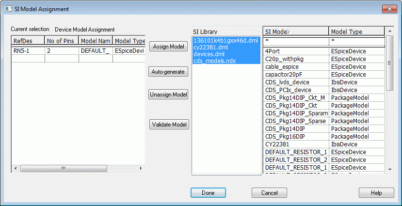

You can assign DML signal models on instances and pins by using one of the following options:
- Assign on individual instances and pins: Select the instances on the design and choose SI Analysis – Assign SI Model or choose Signal Integrity – Assign SI Model from the right-click menu. This launches the SI Model Assignment window.

You can either assign a model from an existing library or automatically generate a model. You can also use this dialog box to validate models and to remove model assignments.
You can choose View – Selection Filter and then choose Assign SI Model from the pop-up menu for any part or pin.
- Auto-assign for discrete models: Choose SI Analysis – Auto Assign Discrete SI Models. This generates and adds default models on all the discrete devices on the design.
The SIGNAL_MODEL property is added on
occurrences instead of instances if there are differences
in properties or if there are multiple occurrences of an
instance.
|
|
You cannot assign models to a part that is not in the occurrence hierarchy. |
|
|
In this flow |
You need to ensure that voltage is defined for the DC nets for proper extraction. If power and ground pins do not have voltage property, the performance might be affected. For example, if a large number of bypass capacitors are present and the ground pins do not have voltage property, the performance will be affected because each net will be explored. Choose SI Analysis - Identify DC Nets to modify or add voltages on the DC nets in the design.